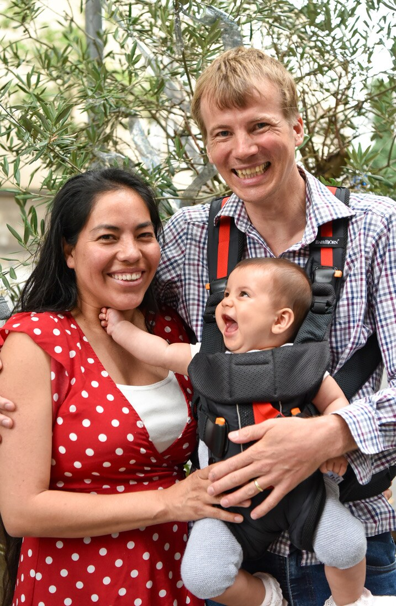

I am happily married. My wife, daughter, and I reside in Duisburg and spend extended weekends in Amsterdam, Prague, and San Juan del Rio (Mexico).

Most of what I know about decisions under uncertainty I learned by hitchhiking. Waiting for a ride resembles a Poisson process. But there is a caveat! A beginner feels lucky when picked up within minutes. Yet, an expert knows that the real adventure arrives only after a whole day of waiting.
I've met all kinds of people on my journeys, including the confused ones. I'm not aware of having met anyone inherently evil. There might be some selection bias in that I'm still writing these lines.
After two years of renting an apartment in NYC, I questioned whether it was worth paying half my scholarship just to have to sleep in the same place every night. I spent the following three months sleeping in parks, beaches, and rooftops around the city while studying and teaching at NYU.
There was still one thing I missed about having an apartment: the opportunity to host travelers. The concern dissolved once I realized that survival know-how is more than property.
During the rest of my PhD studies at NYU, I lived on a sailboat, which also served as my mode of transportation for my return to Europe upon graduation. My PhD took eight years to complete because I had to acquire basic sailing skills to facilitate my relocation. The crew, recruited through Craigslist's ride-sharing forum, had never sailed before — nor, I suspect, after.